Dossier d'étude et de conception
ATM-Chatbot
Un assistant conversationnel qui aide les techniciens de maintenance des guichets automatiques (GAB) et des terminaux de paiement (TPE) à résoudre une panne en s'appuyant sur les interventions déjà réalisées.
00Le projet en bref
Ce document décrit ATM-Chatbot du point de vue du besoin et de la conception, sans entrer dans le code. Il suit l'ordre d'un projet bien mené : on part du problème, on décrit ce que les utilisateurs doivent pouvoir faire, puis on explique comment le système est conçu pour y répondre.
- Le problème
- Les solutions aux pannes restent dans la mémoire de quelques techniciens expérimentés.
- La réponse
- Un assistant qui retrouve les interventions passées semblables et montre ce qui a réellement marché.
- Pour qui
- Les techniciens sur le terrain, au clavier ou à la voix, sur PC, tablette ou téléphone.
- Ce qu'on gagne
- Moins d'essais au hasard, un savoir partagé, et une base qui s'améliore à chaque intervention.
Partie 1 · Étude du besoin
01Contexte et problème
Un technicien intervient seul devant un GAB en panne : la carte du client est restée bloquée, l'écran est noir ou les billets ne sortent pas. Souvent, quelqu'un a déjà rencontré exactement cette panne. Mais cette expérience n'est écrite nulle part de façon exploitable.
Aujourd'hui, le technicien a trois options : appeler un collègue (s'il est disponible), fouiller dans des notes personnelles (si elles existent), ou essayer des manipulations jusqu'à ce que l'une fonctionne. Dans les trois cas, la solution trouvée n'est pas transmise au suivant.
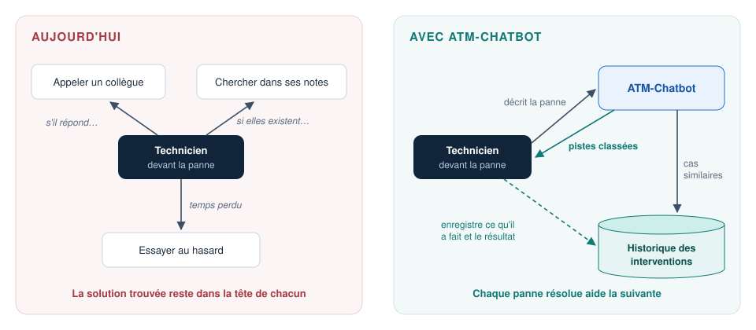
02Objectifs
- Réduire le temps de diagnostic en proposant d'emblée les interventions passées les plus proches de la panne décrite.
- Privilégier ce qui marche vraiment en classant les solutions selon leur taux de réussite constaté sur le terrain, et non selon une opinion.
- Capitaliser le savoir : chaque intervention enregistrée améliore les réponses suivantes.
- S'adapter au terrain : description en langage courant, à l'écrit ou à la voix, sur tout appareil.
- Ne jamais inventer : l'assistant reformule l'historique, il ne fabrique pas de procédure.
03Acteurs
Un acteur est une personne ou un système qui interagit avec ATM-Chatbot.
| Acteur | Type | Ce qu'il attend du système |
|---|---|---|
| Technicien | Humain | Des pistes fiables pour la panne qu'il a devant lui, et un moyen simple d'enregistrer ce qu'il a fait. |
| Technicien référent | Humain | Garder un catalogue d'actions propre : décider si une action nouvelle est vraiment nouvelle ou s'il s'agit d'une action déjà connue, formulée autrement. |
| IA de langage | Système externe | Comprendre l'intention d'un message et rédiger une réponse lisible à partir des cas fournis. |
| Moteur de similarité | Système externe | Transformer une phrase en « empreinte de sens » pour pouvoir comparer deux descriptions de panne. |
04Besoins
Besoins fonctionnels : ce que le système doit faire
| Réf. | Besoin | Acteur |
|---|---|---|
| BF-01 | S'identifier avec son numéro de technicien. | Technicien |
| BF-02 | Choisir le type d'appareil (GAB ou TPE) sur lequel porte la conversation. | Technicien |
| BF-03 | Décrire une panne en langage courant, à l'écrit ou en dictant. | Technicien |
| BF-04 | Recevoir les interventions passées les plus semblables, sur le même type d'appareil. | Technicien |
| BF-05 | À défaut de cas semblables, recevoir les solutions connues classées par fiabilité. | Technicien |
| BF-06 | Demander le détail d'un résultat en le désignant simplement (« le deuxième »). | Technicien |
| BF-07 | Écouter les réponses à voix haute, et converser entièrement à la voix (mode mains libres). | Technicien |
| BF-08 | Obtenir en un clic la fiche d'un code d'erreur fréquent. | Technicien |
| BF-09 | Rechercher un code d'erreur par son code, exact ou partiel (ex. « E4 »). | Technicien |
| BF-10 | Enregistrer une intervention : appareil concerné et symptômes constatés. | Technicien |
| BF-11 | Enregistrer chaque action tentée, son résultat, et si elle a résolu la panne. | Technicien |
| BF-12 | Ranger une action nouvelle dans le catalogue, après avoir vu les actions existantes qui lui ressemblent. | Référent |
| BF-13 | Recalculer automatiquement les taux de réussite après chaque enregistrement. | Système |
Besoins non fonctionnels : les qualités attendues
| Réf. | Qualité | Exigence |
|---|---|---|
| BNF-01 | Fiabilité de l'information | L'assistant ne présente que des cas réellement enregistrés, et seulement s'ils ressemblent suffisamment à la panne décrite (seuil réglable). |
| BNF-02 | Pertinence par équipement | Un GAB et un TPE n'ont pas la même mécanique : les recherches et les statistiques sont toujours séparées par type d'appareil. |
| BNF-03 | Fonctionnement dégradé | Si l'IA de rédaction ne répond pas, les cas trouvés sont tout de même affichés. Si la recherche est indisponible, un message clair invite à réessayer. |
| BNF-04 | Rapidité | Fiche de code d'erreur fréquent : immédiate. Réponse complète : quelques secondes. |
| BNF-05 | Ergonomie terrain | Utilisable au téléphone, à une main, avec la voix ; vocabulaire du métier. |
| BNF-06 | Indépendance vis-à-vis des fournisseurs | Changer d'IA (Gemini, Claude ou un modèle installé localement) se fait par un réglage, sans refaire le système. |
| BNF-07 | Autonomie des équipes métier | Fiches de codes d'erreur, images et avatars modifiables sans programmer. |
| BNF-08 | Confidentialité | Les données restent sur nos serveurs ; seuls les textes nécessaires partent vers les services d'IA. Les clés d'accès ne sont jamais écrites dans le programme. |
| BNF-09 | Portabilité | Le système s'installe à l'identique sur n'importe quel serveur (conteneurs). |
05Cas d'utilisation
Le diagramme de cas d'utilisation montre, d'un coup d'œil, qui fait quoi avec le système. Chaque ovale est un service rendu ; chaque trait relie un acteur aux services qu'il utilise.
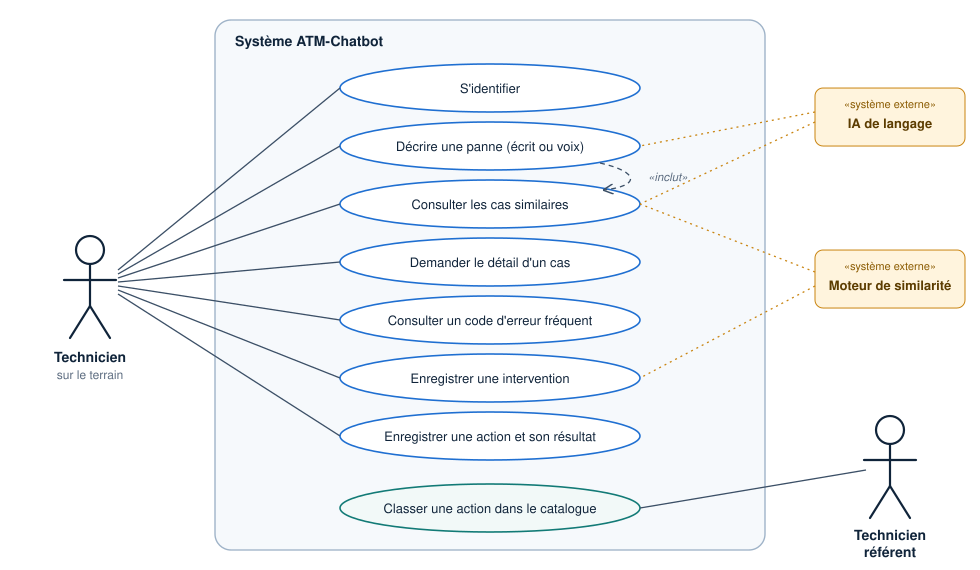
Fiches détaillées des deux cas principaux
UC-02Décrire une panne et obtenir des pistes- Acteur principal
- Technicien
- Avant de commencer
- Le technicien est identifié. Le type d'appareil est choisi dans l'interface ou mentionné dans le message.
- Déroulement normal
- Le technicien décrit la panne avec ses mots (« le GAB a avalé la carte »).
- Le système comprend qu'il s'agit d'une demande de diagnostic.
- Il cherche les interventions passées semblables, sur le même type d'appareil.
- Il présente jusqu'à trois cas, du plus proche au moins proche, avec ce qui a été fait et la fiabilité connue.
- Le technicien peut demander le détail d'un cas (« le deuxième »).
- Variantes
- Aucun cas semblable : le système propose les solutions connues, classées par taux de réussite.
- Rien de connu du tout : il le dit clairement, sans inventer.
- Type d'appareil inconnu : il demande s'il s'agit d'un GAB ou d'un TPE.
- Service de recherche indisponible : il invite à réessayer dans un instant.
UC-06Enregistrer une intervention- Acteur principal
- Technicien
- Avant de commencer
- L'appareil et le technicien existent dans la base.
- Déroulement normal
- Le technicien indique l'appareil et décrit un ou plusieurs symptômes.
- Le système calcule l'empreinte de sens de chaque symptôme, pour les recherches futures.
- Si un symptôme est quasi identique à un symptôme déjà catalogué (ressemblance d'au moins 85 %), il y est rattaché automatiquement.
- L'intervention et tous ses symptômes sont enregistrés ensemble.
- Règle de gestion
- Tout ou rien : si une étape échoue, rien n'est enregistré. On évite ainsi un symptôme orphelin ou une intervention incomplète.
- Variantes
- Appareil ou technicien inconnu : l'enregistrement est refusé avec un message explicite.
- Symptôme sans équivalent proche : il est enregistré tel quel. Il pourra être rattaché plus tard.
Partie 2 · Comprendre le fonctionnement
06Le parcours d'une question
Tout message suit le même chemin en trois étapes : comprendre ce que veut le technicien, chercher dans l'historique si c'est utile, puis répondre en mémorisant l'échange pour la suite de la conversation.
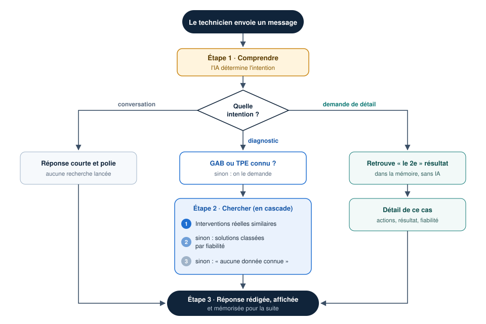
Pourquoi la demande de détail se passe d'IA : quand le technicien écrit « le deuxième », le système sait exactement quel cas il a montré en deuxième position, car il l'a mémorisé. Il ne demande pas à l'IA de deviner, ce qui supprime tout risque de confusion.
Le même parcours, vu dans le temps
Le diagramme de séquence suivant montre qui parle à qui, et dans quel ordre, pour un diagnostic. Les flèches pleines sont des demandes, les flèches en pointillés des réponses.
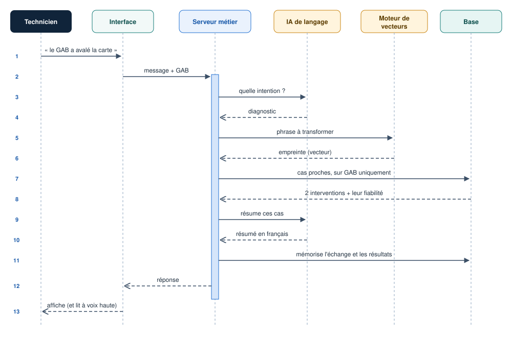
07Retrouver une panne semblable
Deux techniciens ne décrivent jamais une panne avec les mêmes mots. « Le GAB a avalé la carte » et « la carte reste coincée dans le distributeur » parlent pourtant de la même chose. Une recherche par mots-clés échouerait ; ATM-Chatbot compare donc le sens des phrases.
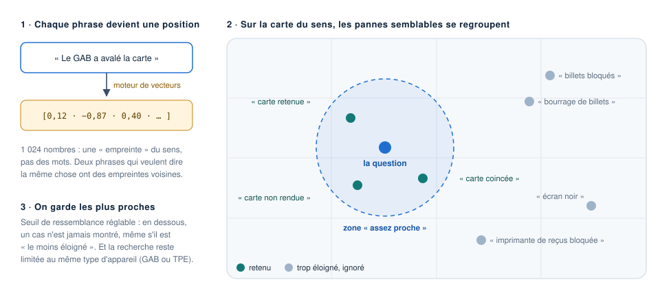
Deux garde-fous complètent ce principe. D'abord, un seuil de ressemblance : un cas trop éloigné n'est jamais montré, même s'il est « le moins éloigné » de tous. Ensuite, la recherche est toujours limitée au même type d'appareil que la question.
08Mesurer ce qui marche
Pour chaque couple « symptôme + action », et pour chaque type d'appareil, le système compte combien de fois l'action a été essayée et combien de fois elle a réellement résolu la panne. Le rapport des deux donne la fiabilité.
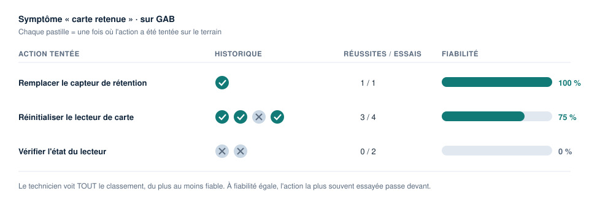
Rien n'est masqué : le technicien voit tout le classement et garde la décision finale. La fiabilité n'est jamais saisie à la main. Elle est recalculée à partir des interventions enregistrées.
09Un système qui s'enrichit
ATM-Chatbot n'est pas figé. Chaque intervention enregistrée nourrit les réponses suivantes, ce qui forme une boucle vertueuse.
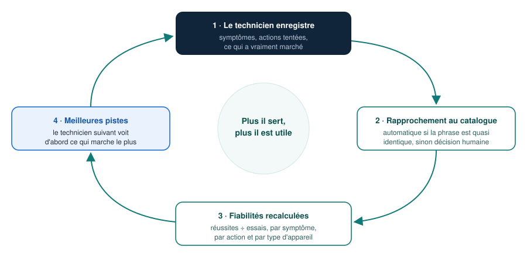
Le rôle du catalogue : les techniciens écrivent librement (« carte avalée », « carte bloquée »). Le catalogue regroupe ces formulations sous un libellé unique. Sans lui, les statistiques seraient éparpillées entre des dizaines de façons de dire la même chose.
10Les codes d'erreur fréquents
Certaines pannes reviennent si souvent, avec un code affiché par la machine (E42, E67…), que leur procédure est déjà connue. Pour celles-ci, inutile de solliciter l'IA : une fiche préparée à l'avance s'affiche dès que le technicien touche la bulle du code.
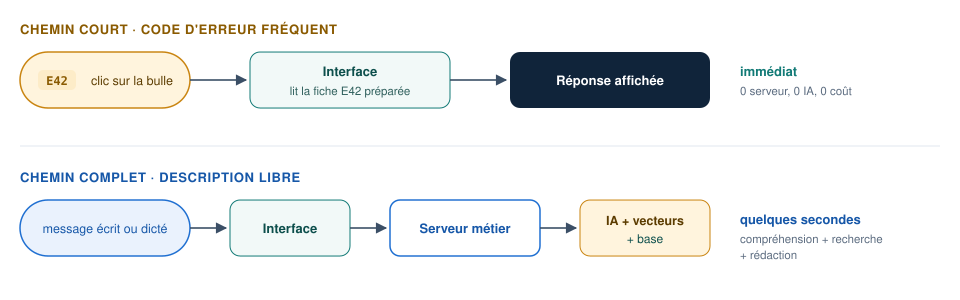
Ces fiches sont de simples fichiers, un par code. Un responsable métier peut en ajouter ou en corriger sans intervention d'un développeur.
Partie 3 · Conception
11Architecture
Le système est découpé en blocs aux rôles bien séparés. Ce découpage permet de faire évoluer chaque bloc sans toucher aux autres : changer de fournisseur d'IA, par exemple, ne concerne qu'un seul bloc.
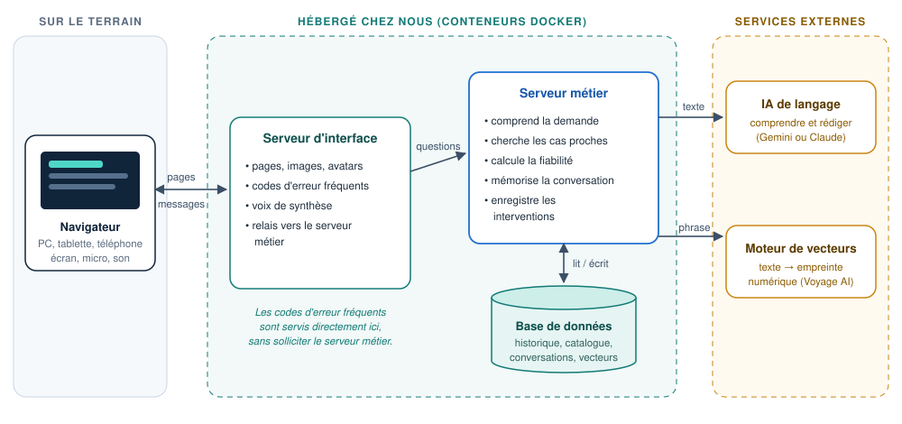
- Navigateur : rien à installer. Le micro et le haut-parleur de l'appareil servent au mode vocal.
- Serveur d'interface : fournit les pages et les images, les fiches de codes d'erreur et une voix française de qualité. Il relaie les questions vers le serveur métier, qui n'est jamais exposé directement.
- Serveur métier : le cerveau. Il applique les règles (seuils, séparation GAB/TPE, cascade de recherche) et orchestre les appels aux services d'IA.
- Base de données : une seule base conserve l'historique, le catalogue, les conversations et les empreintes de sens.
- Services externes : l'IA de langage comprend et rédige ; le moteur de vecteurs calcule les empreintes de sens.
12Technologies retenues
Le tableau suivant détaille les technologies retenues pour chaque bloc, avec la raison de chaque choix.
| Bloc | Technologie | Pourquoi ce choix |
|---|---|---|
| Interface | HTML, CSS, JavaScript (sans framework) | Légère et rapide, même sur un téléphone modeste ; aucune installation. |
| Voix | Reconnaissance vocale du navigateur, synthèse edge-tts | Dictée intégrée à Chrome et Edge ; voix françaises naturelles, identiques sur tous les appareils. |
| Serveur d'interface | Python (serveur web léger) | Simple et suffisant : sert les pages et relaie les questions. |
| Serveur métier | Python + FastAPI | Vérifie automatiquement les données reçues et documente lui-même ses services. |
| Base de données | PostgreSQL 16 + extension pgvector | Base robuste et éprouvée. L'extension permet la recherche par ressemblance dans la même base que les données classiques. |
| Empreintes de sens | Voyage AI (voyage-3-large, 1 024 dimensions) | Très bonne compréhension du français technique ; service recommandé pour une utilisation avec Claude. |
| IA de langage | Gemini en développement, Claude en cible | Gemini offre un palier gratuit pour les essais ; Claude est retenu pour la version finale. Un modèle local reste possible. On passe de l'un à l'autre par un simple réglage. |
| Hébergement | Docker (conteneurs) | Le même ensemble s'installe à l'identique sur un poste de développement ou sur un serveur de production. |
13Modèle de données
Le diagramme de classes décrit les informations que le système conserve et les liens entre elles. Chaque boîte est un type d'information ; chaque trait, une relation. Les petits nombres (1, 0..*) indiquent « combien » : par exemple, une intervention contient au moins un symptôme (1..*).
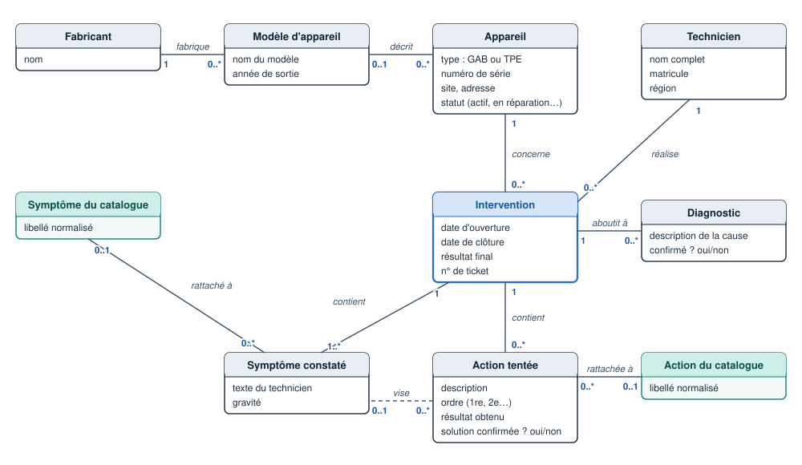
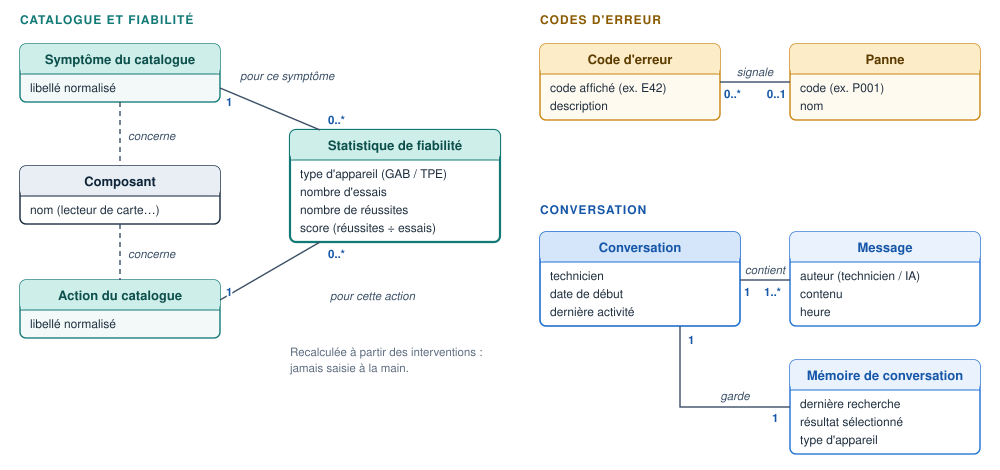
Deux façons de décrire une panne, volontairement : le symptôme constaté garde les mots exacts du technicien, sans rien perdre ; le symptôme du catalogue est la version normalisée, qui sert aux statistiques.
14Sécurité, confidentialité et limites
Ce qui est prévu
- Les consignes données à l'IA lui interdisent d'ajouter une information absente des cas fournis. Elle reformule ; elle ne diagnostique pas seule.
- L'IA ne manipule jamais d'identifiant interne. Les références (« le deuxième », un nom de modèle, un code d'erreur) sont résolues par le serveur métier, de façon vérifiable.
- Un technicien ne peut pas reprendre la conversation d'un autre technicien.
- Les clés d'accès aux services d'IA sont stockées hors du programme.
Limites connues de la version actuelle
- Connexion simplifiée : l'identification se fait par numéro de technicien, sans mot de passe. Elle devra être raccordée à l'annuaire de l'entreprise avant une mise en production.
- Données envoyées à l'extérieur : les descriptions de pannes transitent par les services d'IA. Il faut éviter d'y saisir des données personnelles de clients.
- Quotas : en offre gratuite, le moteur de vecteurs limite le nombre de requêtes par minute. Un abonnement sera nécessaire en usage réel.
- Qualité de départ : au lancement, l'historique est réduit. La pertinence progresse avec le nombre d'interventions enregistrées (figure 7).
15Démarche du projet
Le projet suit cinq phases, chacune produisant un livrable vérifiable avant de passer à la suivante.
Étude du besoin
Échanges avec les techniciens, recueil des pannes fréquentes et de leurs codes. Livrable : besoins et cas d'utilisation (parties 1 et 2 de ce dossier).
Conception
Architecture, choix des technologies, modèle de données, parcours d'un message. Livrable : partie 3 de ce dossier.
Réalisation
Base de données et jeu de démonstration, serveur métier, interface, mode vocal, fiches de codes d'erreur.
Tests et validation
Tests automatiques, vérification des règles (séparation GAB/TPE, seuils, cas sans résultat), puis essais avec des techniciens.
Déploiement et amélioration continue
Mise en service, enrichissement du catalogue, réglage des seuils de ressemblance, passage à l'IA cible.
16Glossaire
- GAB
- Guichet automatique bancaire : le distributeur de billets.
- TPE
- Terminal de paiement électronique : l'appareil de paiement par carte chez un commerçant.
- Intervention
- Une visite d'un technicien sur un appareil : ce qu'il a constaté, ce qu'il a tenté, le résultat.
- Catalogue
- La liste normalisée des symptômes et des actions, qui regroupe les formulations libres équivalentes.
- Fiabilité
- Réussites ÷ essais, pour une action donnée face à un symptôme donné, sur un type d'appareil donné.
- IA de langage
- Programme capable de comprendre et de rédiger du texte (Gemini, Claude). On parle aussi de LLM.
- Empreinte de sens
- Liste de nombres qui résume le sens d'une phrase. Deux phrases de même sens ont des empreintes proches. Le terme technique est « vecteur » ou « embedding ».
- Seuil de ressemblance
- Ressemblance minimale pour qu'un cas soit montré (réglable, de 0 à 1).
- Serveur métier
- Le programme central qui applique les règles et coordonne les échanges. On parle aussi d'API.
- Conteneur
- Un emballage standard (Docker) qui permet d'installer un programme à l'identique sur n'importe quelle machine.